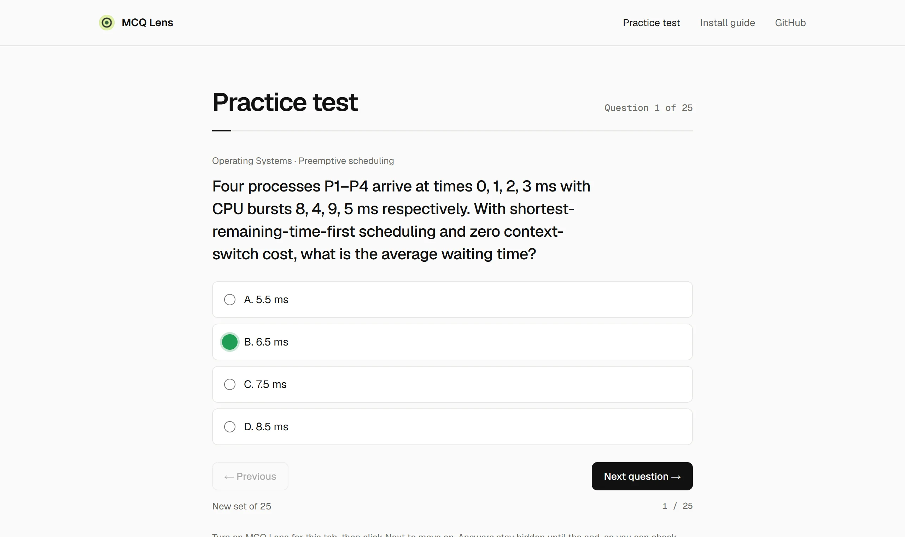

Answers, highlighted on the page.
MCQ Lens reads the multiple-choice question on your screen and outlines the suggested option. Press Alt+Shift+Y to see why. Free, no account.

How it works
- 1
Install
Download the zip and load it in your browser. The install guide takes about a minute.
- 2
Turn it on
Open a page with a question, click the MCQ Lens icon and choose Enable on this tab.
- 3
Check the suggestion
The suggested option is outlined. Press Alt+Shift+Y to see the reasoning. Next question? It answers again.
What to know
It never clicks for you
MCQ Lens only highlights. It doesn’t select or submit anything.
Only the tab you choose
It reads a page only after you turn it on there, and stops when you reload or leave.
50 free questions a day
Need more? Add your own free Groq, Gemini or Z.ai key in Settings.
No sign-up
A question goes only to the MCQ Lens service and its AI providers. Read the privacy policy.
Try it on 25 practice questions
Random questions across eight subjects, with the answer key at the end.